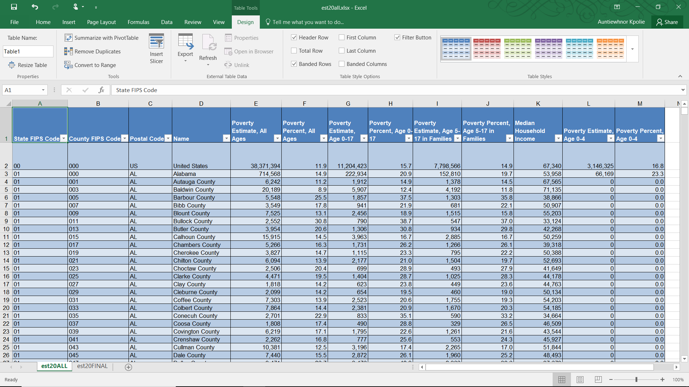
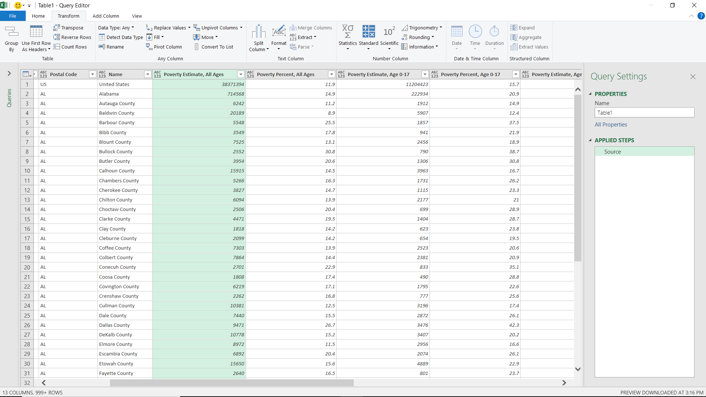
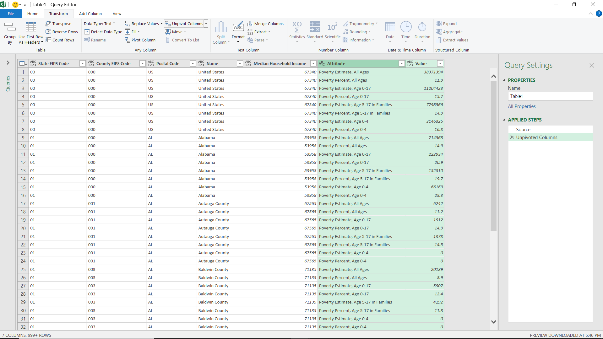
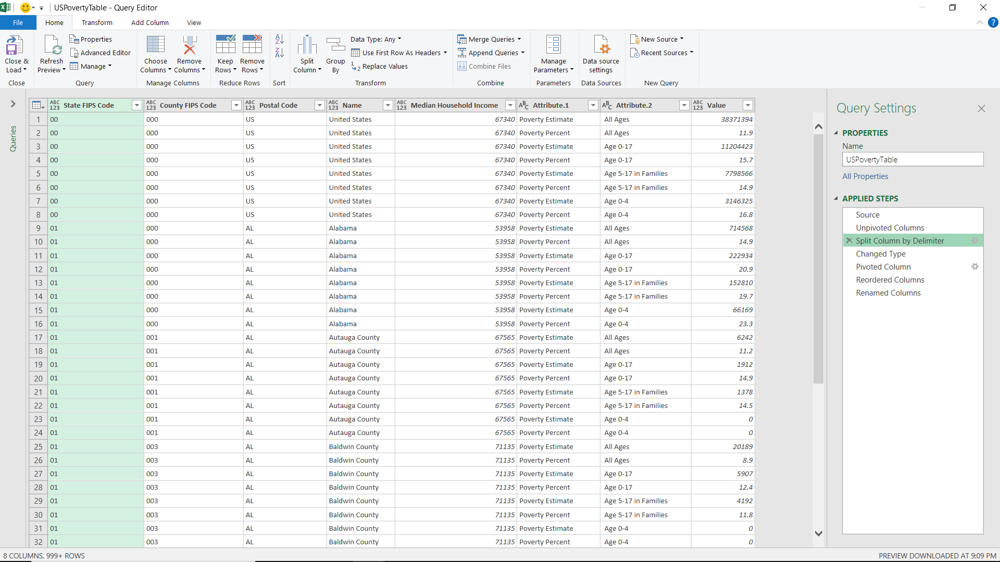
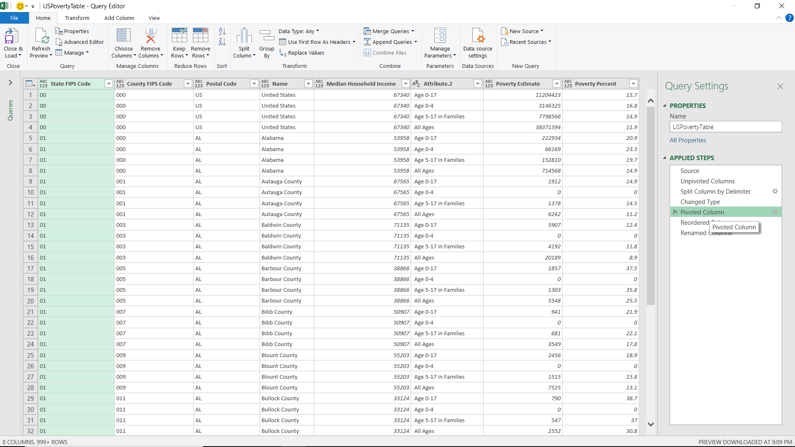
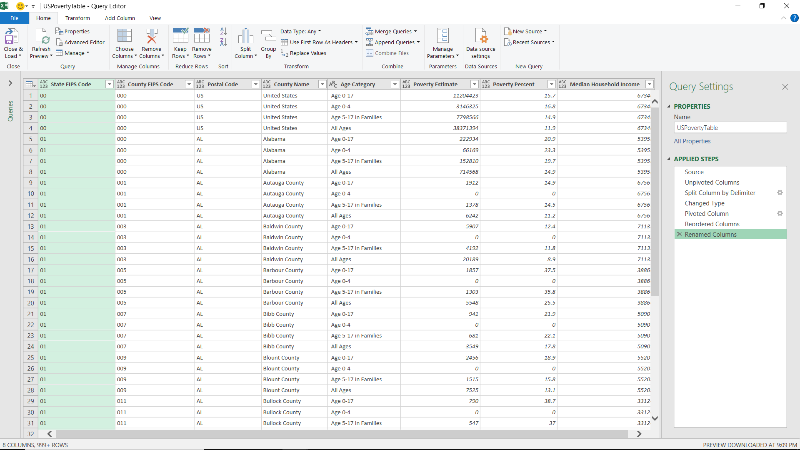

This dataset features SAIPE (Small Area Income and Poverty Estimates) for the United States. The Census Bureau used IRS and SNAP data to create the datasets for school districts and for states, along with their corresponding counties.
Below, I walk through on how I prepared the data for Tableau.
Initial Data Structure
Here is a glimpse at the first few rows in Excel:
Although this is fine for humans to read, this format isn't great for Tableau. There's 4 age categories with their own percents and estimates. For visualization purposes, it would be better to have one column for age category, one for poverty estimate, and one for poverty percent. Median Household Income can be a column on it's own, and the 90% Confidence Interval columns are irrelevant.
Transformation with Power Query
The data is less cluttered after removing unwanted columns (Confidence Intervals, Table Description). To finish data preparation, I turned the data into an Excel table, and used Power Query to pivot and unpivot columns.
 First, I transform the Poverty Percent and Poverty Estimate columns into a single column, and then split on the comma to create two columns (Attribute.1 and Attribute.2).
 Then, I repivot the Attribute.1 column and rename Attribute.2 into Age Category. I also corrected the FIPS Code type and renamed the "Name" column into County name for reability.
 Final Table
This final table is what I used to create my Tableau visualization. It is much easier to work with, despite having multiple of the same state and county names in the "Postal Code" and "County" columns.